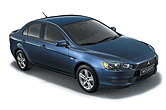
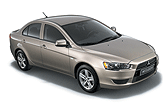
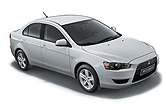
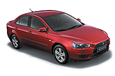
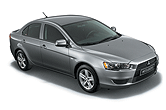
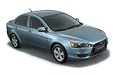
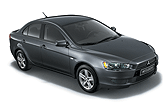
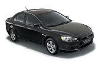

1.5 Invite+ MT S05
- Модель - 1.5 Invite+ MT
- Двигатель - 1.5 MIVEC
- Спецификация двигателя Бензиновый, 109 л.с. Евро-4
- Исполнение - INVITE+
- Коробка передач - 5MT
- Модельный код - CY2ASNSHL6Z
Двигатель
1.5-литровый, бензиновый, 109-сильный, MIVEC (Mitsubishi Innovative Valve Electronic Control - фирменная инновационная система электронного управления фазами газораспределения), DOHC (два верхних распредвала), 16-клапанный, Евро-4
Примечание: Вся гамма двигателей поставляется в исполнении для стран с холодным климатом
Коробка передач
5-ступенчатая механическая
Подвеска
- Передняя - типа Макферсон
- Задняя – многорычажная
- Увеличенный клиренс (дорожный просвет): 165 мм
- Передний стабилизатор поперечной устойчивости
Тормоза
- Передние - 15-дюймовые, дисковые, вентилируемые
- Задние - 14-дюймовые, дисковые, со встроенными барабанными стояночными тормозами
- AБС (антиблокировочная система тормозов) интегрированная с EBD (электронная система распределения тормозных сил)
Рулевое управление
- Реечное рулевое управление
- Усилитель рулевого управления
- Регулируемая по наклону рулевая колонка
Колеса
- Cтальные диски 16x6.00JJ и шины 205/60R16 92H
- Полноразмерные колпаки колес
- Полноразмерное запасное колесо
Прочее
- Двойной звуковой сигнал
- Корректор фар головного света
- Силиконовые уплотнители дверей
- Аккумуляторная батарея увеличенной емкости
- Антикоррозийная обработка кузова
Экстерьер:
- Окрашенный в цвет кузова передний бампер
- Центральная часть бампера выкрашена в черный цвет
- Декоративная решетка радиатора (черная окантовка)
- Фары головного света с галогеновыми лампами
- Омыватели и стеклоочистители ветрового стекла с регулируемым интервалом
- Черные молдинги на крыше
- Заднее стекло с электроподогревом с функцией автоматического отключения
- Верхний стоп-сигнал
- Задний противотуманный фонарь с функцией автоматического отключения
- Хромированная эмблема Mitsubishi "Три бриллианта"
- Задние брызговики
- Передние брызговики
- Передние противотуманные фары
Набор окрашенных деталей @25:
- Черные средние стойки дверей
- Окрашенные в цвет кузова наружные ручки дверей
- Наружные зеркала заднего вида с электроприводом и обогревом с корпусами в цвет кузова
Интерьер:
- Фронтальные двухстадийные надувные подушки безопасности для водителя и переднего пассажира (с функцией отключения-только для комплектаций с коленной подушкой безопасности)
- Тканевая отделка сидений (с регулировкой по высоте водительского сидения)
- Обогрев сидений
- Кондиционер
- Прикуриватель
- Центральный замок
- Ремни безопасности для водителя и переднего пассажира с инерционными катушками, преднатяжителями и граничителями усилия
- Подлокотник для водителя и переднего пассажира
- Подлокотник для задних пассажиров
- Панель для штатной аудиосистемы
- Травмобезопасные стеклоподъемники (с функцией one-touch)
- Аудиоподготовка: 4 динамика, проводка
- CD-MP3-ресивер, радиоприемник и цифровые кварцевые часы
- 3-cпицевое полиуретановое рулевое колесо
- Кожанная отделка руля,
- Обтянутые кожей рукоятка рычага КПП и стояноного тормоза с хромированной кнопкой
- Три задних 3-точечных ремня безопасности с инерционными катушками ELR
- Задние сидения, со складываемами в отношении 60:40 спинками
- Автоматическая система разблокировки дверей при аварии
- Зуммер предупреждения о непристегнутых ремнях безопасности
- Тахометр
- Бортовой компьютер с датчиком температуры забортного воздуха
- Рулевое колесо с кнопками управления аудиосистемой
- Крепление для детского сидения ISO-FIX
- Штурманская лампа местной подсветки с таймером
- Обивка крышки багажника
- Лампа подсветки багажника
- Площадка для отдыха левой ноги водителя
- Хромированные внутренние ручки дверей
- Хромированные накладки воздуховодов в салоне
Цвета

«Синий мика» (Р) Т65

«Бежевый металлик» (M) S18

«Белый» W37

«Красный металлик» (M) Р26

«Серебристый металлик» (M) А31

«Серо-зеленый металлик» (M) А86

«Серый мика» (Р) А39

«Черный мика» (Р) Х42